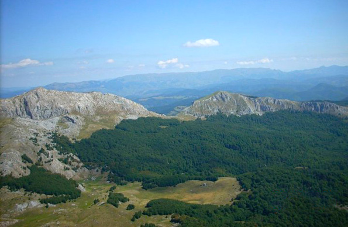

Планина Трескавица је једна од најљепших планина у БиХ. Припада ланцу динарских планина, а подијељена је на двије цјелине: сјеверни дио се назива Босанска или Трновска, а јужни Херцеговачка или Калиновачка Трескавица. Њене падине красе велике и густе црногиричне и бјелогоричне шуме, између којих се простиру бројни пропланци са бујним пашњацима. На падинама ове планине доминира Вријесак (Calluna vulgaris), биљка изразито љубичасте боје, која у току сушне године (најкасније у јесен) поцрни. Сматра се да је почетни дио имена Калиновика, изведен управо од латинског назива ове биљке.
Посебан украс Трескавице су њених пет ледничких језера, која се налазе на око 1.500 метара надморске висине, те представљају праву природну ријеткост и планинску атракцију. Од језера постоје – Велико, Бијело, Црно, Платно и Мало, а свако од њих представља посебан екосистем са богатом и разноврсном флором и фауном. Водом, једна од најбогатиих планина на Балкану, само 365 сталних извора и четири ријеке (Бистрица, Жељезница, Љута, и Бијела ријека).
Највећи врх је Ђокин торањ (2.086 м/нв), а читав планински ланац има око 10 већих врхова.
Планина Зеленгора је прави природни драгуљ. Нетакнута природа, ваздух, кристално чиста вода, сваком посјетиоцу пружа угодан и незабораван боравак. Лијепу, романтичну, а прије свега здраву околину украшава 9 ледничких језера, која се још називају „горске очи“, размјештених по цирковима, валовома и планинским увалама на висинама изнад 1.500 м/нв. То су: Орловачко, Црно, Бијело, Доње баре, Горње баре, Бориловачко, Котланичко, Штиринско и Кладопољско језеро.
То је огромна висораван са више планинских гребена. Највиши врх је Брегоч са 2.014 м/нв, а најљепши Стог 1.821 м/нв. Обилује богатством флоре и фауне, а о томе свједочи последња прашума у Европи – Перућица, у којој још увијек има примјерака ендемске Панчићеве оморике (Picea omorika). Ниједна планина у Босни и Херцеговини није тако зелена као Зеленгора. На бројним врховима са стрмим литицама, готово увијек се може видјети крдо дивокоза, јата сивих орлова, а на прекрасним пространим пашњацима могу се видјети крда срна. Разноврсно планинско биље чини ову планину још посебнијом, међу којима доминирају: енцијан, арника, чемерика, звончица, кадуља, пелин, кантарион, те мноштво бобичастог воћа и ријетких јестивих гљива.
Зеленгора је дом за многе врсте дивљачи и ихтиофауне, те као таква представља прави рај за ловце и риболовце. Погодна је за планинарење, шетње и фото-сафари, камповање, купање. Она је оаза мира за све истинске љубитеље природе, романтике и нетакнуте дивљине. Зеленгора нуди прави одмор без савремених технологија, стреса и свакодневног ужирбаног живота. Ко је једном посјети, увијек јој се враћа.